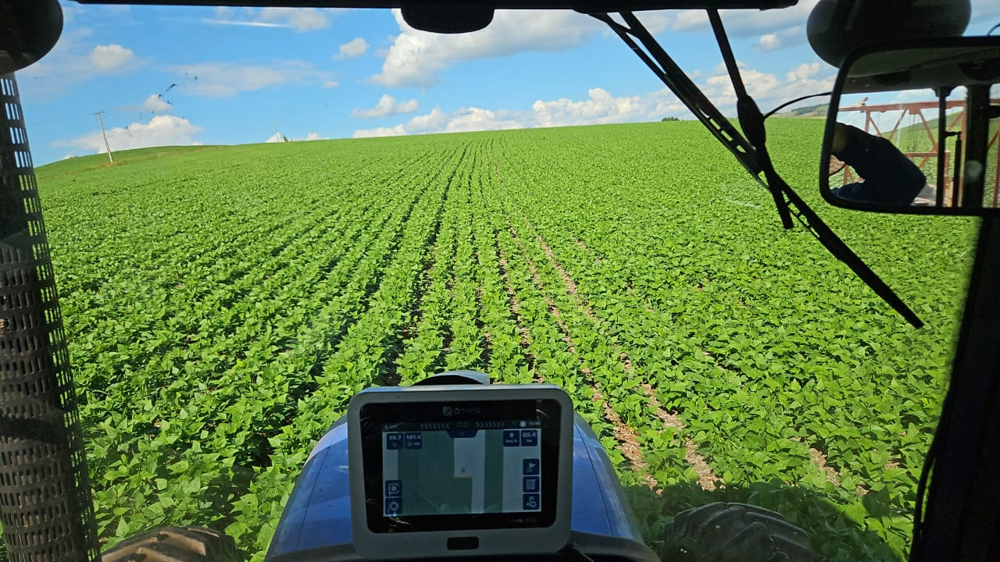

Momentos da Festa


Campo e Cidade unidos pela cultura, trabalho e tradição
Essa celebração destaca a importância da conexão entre o campo e a cidade. Enquanto o campo produz, a cidade consome e transforma. Essa troca fortalece a economia, a cultura e o senso de comunidade.
" A relação cidade-campo fica mais acentuada com as feiras, os proprietários vão mais vezes para a cidade e a cidade sempre muito dependente do campo para alimentação "
"Eu vejo como uma dependência de um para outro, onde o produtor destina grande parte da produção para feiras nas cidades"